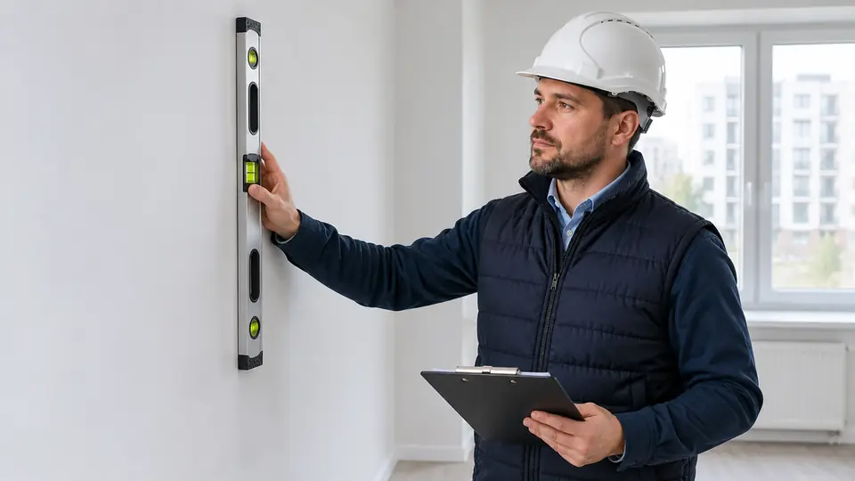
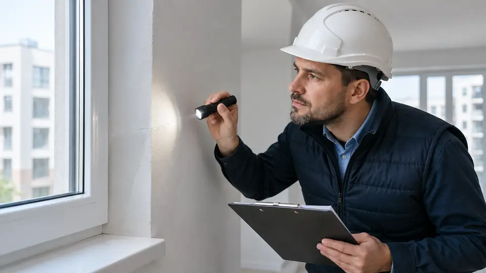

Получили уведомление
Застройщик сообщил, что исправил замечания, или пригласил проверить результат работ.
Застройщик сообщил, что исправил дефекты? Сверим результат с первичным актом и проверим качество выполненных работ.
Повторную проверку проводят после уведомления об устранении замечаний или приглашения на осмотр. Она помогает сопоставить обещанный результат с состоянием квартиры.
Застройщик сообщил, что исправил замечания, или пригласил проверить результат работ.
В первичном акте несколько пунктов, и важно проверить каждый, а не ориентироваться только на отметку «выполнено».
После ремонта могут возникнуть вопросы к той же зоне или соседним участкам.
Чтобы сверить исправления по существу, важно понимать, что именно было отмечено и что застройщик сообщил о выполненных работах.
Подготовьте акт или перечень замечаний. По нему определим, какие пункты застройщик считает устранёнными.
Возьмите уведомление или список выполненных работ, если он есть. Так проще сверить заявленные исправления с фактическим состоянием.
Если сохранились фото замечаний, подготовьте их для сравнения. Заранее сообщите, если доступ к какой-то зоне ограничен.
Нет первичного акта или фото? Скажите об этом при записи — уточним, какие материалы доступны для сверки.
Это не первичный осмотр квартиры заново: основной фокус — пункты исходного акта и зоны, где застройщик выполнил исправления. Новые проблемы рассматриваем отдельно.
Сверяем формулировку и место замечания. Фото первичного осмотра используем, если они сохранились.

Проверяем, устранён ли дефект по существу. Например, смотрим окна, отделку, геометрию или инженерные элементы, если к ним относилось замечание.

Смотрим, не осталось ли проблемы и не появились ли новые дефекты рядом с исправленным участком. Новые замечания отделяем от исходных.
Сначала определяем, что именно исправляли, затем проверяем эти места и разбираем результат по каждому пункту.
По акту и сообщению застройщика определяем, какие замечания заявлены как устранённые.
Осматриваем относящиеся к замечаниям участки и сопоставляем состояние с первичным актом.
Обсуждаем, что устранено, что осталось частично или полностью и появились ли новые замечания.
По каждому пункту исходного акта разбираем фактическое состояние, а не только отметку застройщика о выполненной работе.
| Статус замечания | Что это означает | Что вносим в акт |
|---|---|---|
| Устранено | Исходный дефект при повторном осмотре не выявляется. | Удаляем замечание из первичного акта. |
| Устранено частично | Часть проблемы или её проявлений сохраняется. | Формулируем новое замечание в акте или дополняем предыдущее комментарием. |
| Не устранено | Исходное замечание по-прежнему актуально. | Оставляем прежнее замечание в акте как неисправленное. |
| Новое замечание | Проблема, появившаяся после работ или обнаруженная отдельно, обсуждается отдельно от первичного акта. | Дополняем акт новым замечанием. |
Расчёт — 100 ₽ за каждый квадратный метр, но не менее 5 500 ₽. Например, для квартиры 48 м² действует минимальная стоимость 5 500 ₽, а для 70 м² расчёт составит 7 000 ₽.
Посмотреть другие ценыСкидки на повторную приёмку не применяются.
Уточнить порядок записиКороткие ответы о проверке исправлений, цене и дальнейших шагах.
Подготовьте первичный акт или перечень замечаний, сообщение застройщика о выполненных работах и фотографии первичного осмотра, если они сохранились. Если акта или фото нет, скажите об этом при записи.
Расскажите, что сообщил застройщик и какие замечания были в первичном акте. Уточним порядок повторной проверки и ответим на вопросы по стоимости.